Code
markov.town.full = read.csv("data/vote-history-markov.csv")$history
markov.H = markov.town.full[1:100]$$ \newcommand{X}{} \newcommand{Y}{} % A hex digit after # inside a macro body is eaten by build-time expansion, so digit-leading hexes spell # via .
$$
markov.town.full = read.csv("data/vote-history-markov.csv")$history
markov.H = markov.town.full[1:100]In the last chapter, we calculated the mean of a total without finding its whole distribution. But the mean did not tell Markov’s inequality how tightly a sample average concentrates. We now turn to spread. Can we calculate it with the same table method?
Subtract the mean from a random variable Y. The centered variable Z=Y-\mathop{\mathrm{E}}[Y] records a signed distance from the mean. Its expectation is zero: \mathop{\mathrm{E}}[Z]=\mathop{\mathrm{E}}[Y]-\mathop{\mathrm{E}}[Y]=0. Positive and negative distances cancel. To measure their size, square them before averaging. The variance is the expected squared distance from the mean: \operatorname{Var}(Y)=\mathop{\mathrm{E}}[(Y-\mathop{\mathrm{E}}[Y])^2]=\mathop{\mathrm{E}}[Z^2]. The picture follows twenty centered observations. The gray dots are their signed distances from the mean, so the green mean line starts at zero. A bar counts the fraction of observations at that distance. To square a distance, first square its length on its original side of zero, then fold the negative side over. The original dots and the barbells connecting them to their signed squares stay visible as the distribution changes. Teal tracks observations from the negative side; pink tracks those from the positive side. The final histogram counts squared distances, whose average is the variance.
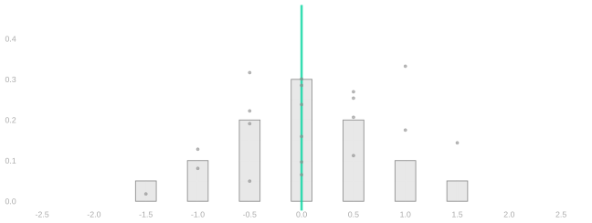


Data. Each gray dot is one centered observation. The gray histogram counts them. Positive and negative distances cancel in their average, zero.
Barbells. Keep every data dot. Connect it to its signed square: for example, -1.5 moves to -2.25, while 0.5 moves to 0.25. The sign still records which side of the mean the observation came from.
Signed-square distribution. Replace the gray histogram by the distribution of the signed-square endpoints. The original dots and connecting barbells remain, so we can follow each observation through the transformation.
Fold and average. Fold the negative histogram onto the positive side and stack their probabilities. The data dots and barbells remain as a reference. The new green line marks the average squared distance—the variance.
Squaring changes the units. The standard deviation takes us back to the units of Y: \operatorname{sd}(Y)=\sqrt{\operatorname{Var}(Y)}.
Remember how we calculated an expectation in the last chapter. We could average over the call sequences directly, or first collect them into response sequences. For a sum, linearity let us go further: calculate each response’s expectation separately, then add.
Variance involves squares. We use the same tables, adding the quantities we want to average. Return to the population 0,0,1,1. Its mean is \mu=1/2. For person j, write z_j=y_j-\mu for the centered response:
| Person j | Response y_j | Centered response z_j | Square z_j^2 |
|---|---|---|---|
| 1 | 0 | -1/2 | 1/4 |
| 2 | 0 | -1/2 | 1/4 |
| 3 | 1 | 1/2 | 1/4 |
| 4 | 1 | 1/2 | 1/4 |
The centered population averages to zero. Its squares average to 1/4, the population variance. On call i we select person J_i, observe Y_i=y_{J_i}, and obtain the centered response Z_i=z_{J_i}=Y_i-\mu. Under either sampling scheme, each person has marginal probability 1/4, so \mathop{\mathrm{E}}[Z_i]=0 and \mathop{\mathrm{E}}[Z_i^2]=1/4.
For the variance of a two-call total, we must average a square of a sum: (Z_1+Z_2)^2=Z_1^2+Z_1Z_2+Z_2Z_1+Z_2^2. We already know the expectations of the squares. The middle terms use two calls together. Add their products to the joint table and calculate them in the same way.
Each of the sixteen call sequences has probability 1/16. As in the last chapter, group them into the four response sequences, each with probability 1/4:
| Responses (Y_1,Y_2) | Centered responses (Z_1,Z_2) | Probability | Product Z_1Z_2 | Product times probability |
|---|---|---|---|---|
| (0,0) | (-1/2,-1/2) | 1/4 | 1/4 | 1/16 |
| (0,1) | (-1/2,1/2) | 1/4 | -1/4 | -1/16 |
| (1,0) | (1/2,-1/2) | 1/4 | -1/4 | -1/16 |
| (1,1) | (1/2,1/2) | 1/4 | 1/4 | 1/16 |
Add the last column: \mathop{\mathrm{E}}[Z_1Z_2]=\frac1{16}-\frac1{16}-\frac1{16}+\frac1{16}=0. We can also obtain this expectation from the two marginal distributions. Each centered response is -1/2 or 1/2 with probability 1/2. Every joint probability in the table is the product (1/2)(1/2). Substituting that product lets us factor the sum: \begin{aligned} \mathop{\mathrm{E}}[Z_1Z_2] &=\left(-\frac12\right)\left(-\frac12\right)\frac12\frac12 +\left(-\frac12\right)\left(\frac12\right)\frac12\frac12\\ &\quad+\left(\frac12\right)\left(-\frac12\right)\frac12\frac12 +\left(\frac12\right)\left(\frac12\right)\frac12\frac12\\ &=\left\{\left(-\frac12\right)\frac12+\left(\frac12\right)\frac12\right\} \left\{\left(-\frac12\right)\frac12+\left(\frac12\right)\frac12\right\}\\ &=\mathop{\mathrm{E}}[Z_1]\mathop{\mathrm{E}}[Z_2]=0. \end{aligned} This time the calculation factors multiplicatively. The reason is the product structure of the joint probabilities—the property we called independence in the last chapter.
The same reasoning works for any functions f and g of independent finite-valued random variables Y and W: \begin{aligned} \mathop{\mathrm{E}}[f(Y)g(W)] &=\sum_y\sum_w f(y)g(w)P(Y=y,W=w)\\ &=\sum_y\sum_w f(y)g(w)P(Y=y)P(W=w)\\ &=\left\{\sum_y f(y)P(Y=y)\right\} \left\{\sum_w g(w)P(W=w)\right\}\\ &=\mathop{\mathrm{E}}[f(Y)]\mathop{\mathrm{E}}[g(W)]. \end{aligned} Conversely, if this holds for every f and g, choose indicators of individual values. The result is the factorization of joint probabilities that defines independence.
Now change the sampling scheme. The population table stays exactly the same. So do the individual response distributions: each centered response still has expectation zero and square expectation 1/4.
The joint probabilities change. Diagonal call sequences are impossible, and each of the twelve remaining sequences has probability 1/12. Grouping those calls into responses produces:
| Responses (Y_1,Y_2) | Centered responses (Z_1,Z_2) | Probability | Product Z_1Z_2 | Product times probability |
|---|---|---|---|---|
| (0,0) | (-1/2,-1/2) | 1/6 | 1/4 | 1/24 |
| (0,1) | (-1/2,1/2) | 1/3 | -1/4 | -1/12 |
| (1,0) | (1/2,-1/2) | 1/3 | -1/4 | -1/12 |
| (1,1) | (1/2,1/2) | 1/6 | 1/4 | 1/24 |
The probabilities no longer factor into the two marginal probabilities. We can still average the product, but must use these joint probabilities: \mathop{\mathrm{E}}[Z_1Z_2]=\frac1{24}-\frac1{12}-\frac1{12}+\frac1{24}=-\frac1{12}. That is not \mathop{\mathrm{E}}[Z_1]\mathop{\mathrm{E}}[Z_2]=0. Opposite-sign pairs are more likely than same-sign pairs, so the negative products outweigh the positive ones.
Linearity has not failed. For the total, it still implies \begin{aligned} \operatorname{Var}(Y_1+Y_2) &=\mathop{\mathrm{E}}[(Z_1+Z_2)^2]\\ &=\mathop{\mathrm{E}}[Z_1^2]+\mathop{\mathrm{E}}[Z_1Z_2]+\mathop{\mathrm{E}}[Z_2Z_1]+\mathop{\mathrm{E}}[Z_2^2]\\ &=\frac14-\frac1{12}-\frac1{12}+\frac14=\frac13. \end{aligned} With replacement the same expansion has two zero middle terms, so the total’s variance is 1/2. The negative product expectations explain the smaller spread without replacement.
Remember the bookkeeping for the three-call distribution: four layers of call sequences, then response sequences, then totals. For variance, we need not build that whole distribution. However many calls we take, squaring a sum produces products involving at most two calls. Linearity lets us average those terms one at a time.
Let the population have m responses y_1\ldots y_m, mean \mu, and variance \sigma^2. Write z_j=y_j-\mu for each centered population response and Z_i=Y_i-\mu for the centered response on call i. Uniform sampling implies \mathop{\mathrm{E}}[Z_i]=\frac1m\sum_{j=1}^m z_j=0, \qquad \mathop{\mathrm{E}}[Z_i^2]=\frac1m\sum_{j=1}^m z_j^2=\sigma^2. For n calls, the sample mean is \hat\mu=n^{-1}\sum_iY_i. It is unbiased, as we proved in the last chapter, so its variance is the expected square of \hat\mu-\mu=n^{-1}\sum_iZ_i.
Expanding the square and using linearity, under either sampling scheme, \begin{aligned} \operatorname{Var}(\hat\mu) &=\frac1{n^2}\sum_{i=1}^n\sum_{j=1}^n\mathop{\mathrm{E}}[Z_iZ_j]\\ &=\frac1{n^2}\left\{n\sigma^2+\sum_{i\ne j}\mathop{\mathrm{E}}[Z_iZ_j]\right\}. \end{aligned} There are n square terms, one for each call, and n(n-1) ordered products of distinct calls. Each product expectation uses only the joint distribution of those two calls. Under uniform sampling with replacement, every distinct pair has the same joint distribution; the same is true under uniform sampling without replacement. In either case, one two-call calculation supplies every cross term. We have lost the product shortcut without replacement, not the saving from linearity.
With replacement, distinct calls are independent. The factorization just proved and the zero mean of each centered response imply \mathop{\mathrm{E}}[Z_iZ_j]=\mathop{\mathrm{E}}[Z_i]\mathop{\mathrm{E}}[Z_j]=0 \qquad (i\ne j). For equal indices, the product is a square, whose expectation is \sigma^2. Substitute these two cases into the variance calculation. Keep the two copies of the sum separate when squaring: \begin{aligned} \operatorname{Var}(\hat\mu) &\overset{\texttip{\small{\text{?}}}{center}}{=}\mathop{\mathrm{E}}\left[\left(\frac1n\sum_{i=1}^nZ_i\right)^2\right]\\ &\overset{\texttip{\small{\text{?}}}{square}}{=}\frac1{n^2}\mathop{\mathrm{E}}\left[ \textcolor{#EF476F}{\sum_{i=1}^nZ_i} \textcolor{#118AB2}{\sum_{j=1}^nZ_j}\right]\\ &\overset{\texttip{\small{\text{?}}}{linearity}}{=}\frac1{n^2}\textcolor{#EF476F}{\sum_{i=1}^n} \textcolor{#118AB2}{\sum_{j=1}^n}\mathop{\mathrm{E}}[\textcolor{#EF476F}{Z_i}\textcolor{#118AB2}{Z_j}]\\ &\overset{\texttip{\small{\text{?}}}{equal indices produce a square; distinct independent centered terms have product expectation zero}}{=}\frac1{n^2}\textcolor{#EF476F}{\sum_{i=1}^n} \textcolor{#118AB2}{\sum_{j=1}^n} \begin{cases} \sigma^2 & \textcolor{#EF476F}{i}=\textcolor{#118AB2}{j},\\ 0 & \textcolor{#EF476F}{i}\ne\textcolor{#118AB2}{j} \end{cases}\\ &\overset{\texttip{\small{\text{?}}}{only the equal-index terms remain}}{=}\frac1{n^2}\sum_{i=1}^n\mathop{\mathrm{E}}[Z_i^2]\\ &\overset{\texttip{\small{\text{?}}}{there are n such terms, each with expectation equal to the population variance}}{=}\frac{n\sigma^2}{n^2} =\frac{\sigma^2}{n}. \end{aligned} Only the n equal-index terms remain. Taking a square root, \operatorname{sd}(\hat\mu)=\frac{\sigma}{\sqrt n}. Quadrupling the sample size halves the standard deviation.
The three sampling schemes in the part opening use the same population. Each draw position has the same marginal mean and variance. That explains their common center. The schemes differ in how the draws occur together.
moments.population = c(rep(1, 40), rep(0, 60))
moments.sizes = c(5, 20, 80)
moments.sampling.distribution = function(n, mechanism) {
if (mechanism == "With replacement") {
estimate = (0:n)/n
probability = dbinom(0:n, n, mean(moments.population))
} else if (mechanism == "Without replacement") {
estimate = (0:n)/n
probability = dhyper(0:n, sum(moments.population),
length(moments.population)-sum(moments.population), n)
} else if (mechanism == "Random-start cycle") {
draws = sapply(seq_along(moments.population), function(start) {
positions = ((start-1+0:(n-1)) %% length(moments.population))+1
mean(moments.population[positions])
})
counts = table(draws)
estimate = as.numeric(names(counts))
probability = as.numeric(counts)/length(moments.population)
} else stop("Unknown sampling mechanism: ", mechanism)
data.frame(n=n, mechanism=mechanism, estimate=estimate, probability=probability)
}
moments.sampling = purrr::map_dfr(moments.sizes, function(n)
purrr::map_dfr(c("With replacement", "Without replacement", "Random-start cycle"),
function(mechanism) moments.sampling.distribution(n, mechanism)))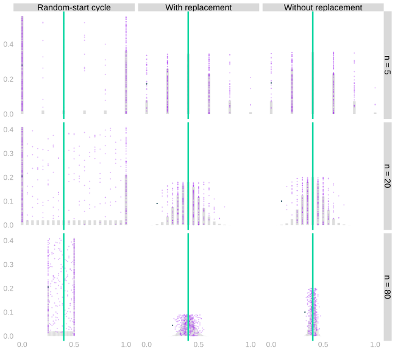
The random-start cycle illustrates the other direction. Consecutive people in this ordered population often have the same response. At the sample sizes shown, their cross terms contribute positively, and the sample average has more variation than under independent sampling. Its individual draws are still uniform.
We now know the sample mean’s variance. How can we turn it into a calibration guarantee?
Let Z=X-\mathop{\mathrm{E}}[X]. We want to bound the probability that X is far from its mean. In the first picture, select the observations at distance at least t on either side. Fold the negative side onto the positive side; those same observations are now above t. Square the distances and the threshold; the same observations are above t^2: |X-\mathop{\mathrm{E}}[X]|\ge t \quad\Longleftrightarrow\quad |Z|\ge t \quad\Longleftrightarrow\quad Z^2\ge t^2.

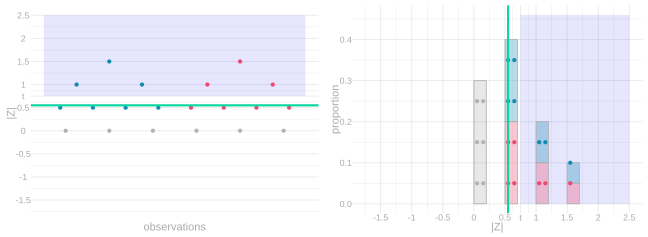

Signed distances. Select observations at distance at least t from zero, on either side. These are precisely the observations at distance at least t from the original mean.
Fold. Replace each distance by its absolute value. The selected observations are now at or above t; their number and probability have not changed.
Square. Square every absolute distance and square the threshold. The same observations are now at or above t^2, and every value is nonnegative.
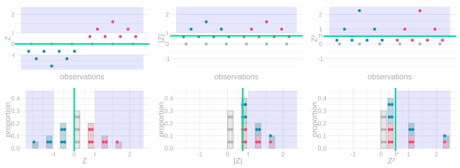
The first two pictures change the event’s description without changing which observations it contains. Then the indicator-to-ramp comparison bounds its probability:

P(Z^2\ge t^2)=\mathop{\mathrm{E}}[1_{\ge t^2}(Z^2)].
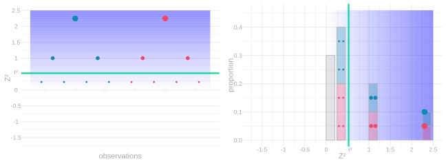
\mathop{\mathrm{E}}[1_{\ge t^2}(Z^2)]\le\mathop{\mathrm{E}}[Z^2/t^2].
Indicator average. Assign one to each selected observation and zero to every other observation. The average is the probability we want to bound.
Ramp average. Replace the indicator by squared distance divided by t^2. Every value is at least as large, so its average bounds the indicator average.
\begin{aligned} P\left(|X-\mathop{\mathrm{E}}[X]|\ge t\right) &=P(Z^2\ge t^2)\\ &=\mathop{\mathrm{E}}[1_{\ge t^2}(Z^2)]\\ &\le\mathop{\mathrm{E}}[Z^2/t^2]\\ &=\frac{\operatorname{Var}(X)}{t^2}. \end{aligned} This is Chebyshev’s inequality. It is Markov’s inequality applied to squared distance.
Write s=\operatorname{sd}(X)>0. Measure distance in multiples of s. Chebyshev implies P\left(|X-\mathop{\mathrm{E}}[X]|\ge ks\right)\le\frac1{k^2}. The bound has the same form for every distribution with finite variance. If s=0, X equals its expectation with probability one and there is no deviation to bound.
Return to the bootstrap/binomial and Markov intervals from Means and Markov’s Inequality. The new Chebyshev intervals remain wider than the binomial calibration, but they shrink as sample size grows. Squaring the centered estimator exposed the information the direct Markov calculation missed.
mcal.theta = 0.7
mcal.n = c(20, 80, 320)
mcal.p = lapply(setNames(mcal.n, mcal.n), function(nn)
with_seed(rbinom(100, nn, mcal.theta)/nn))
mcal.lo = mcal.hi = list()
mcal.lo$markov = lapply(mcal.p, function(p) 0.025*p)
mcal.hi$markov = lapply(mcal.p, function(p) 1-0.025*(1-p))
for (nm in names(mcal.p)) {
nn = as.numeric(nm)
hw.plugin = vapply(mcal.p[[nm]], function(pp) width_binom(pp, nn)/2, numeric(1))
mcal.lo$plugin[[nm]] = mcal.p[[nm]]-hw.plugin
mcal.hi$plugin[[nm]] = mcal.p[[nm]]+hw.plugin
}for (nm in names(mcal.p)) {
nn = as.numeric(nm)
hw.cheb = sqrt(20)*sqrt(mcal.theta*(1-mcal.theta)/nn)
mcal.lo$chebyshev[[nm]] = mcal.p[[nm]]-hw.cheb
mcal.hi$chebyshev[[nm]] = mcal.p[[nm]]+hw.cheb
}The samples, positions, and scales are unchanged. The additional blue intervals use Chebyshev; pink still marks bootstrap/binomial calibration and dark marks Markov.
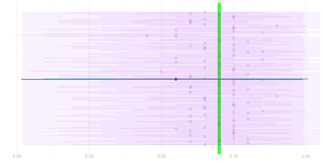
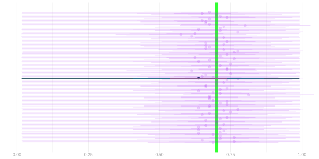
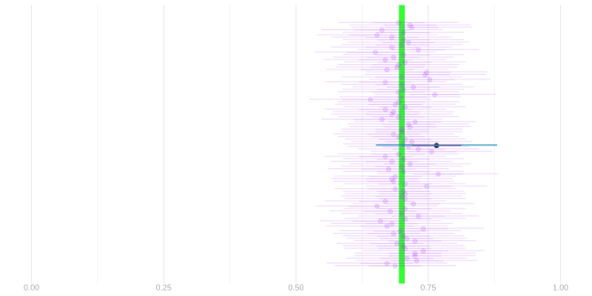
In this comparison we know the population and use its true variance. The guarantee just proved depends on that variance; replacing it with an estimate requires another argument. The bootstrap/binomial intervals use the observed frequency in their calibration, as in the preceding chapter.
Now compare exact and guaranteed intervals under sampling without replacement. The estimator has a different variance, so the Chebyshev interval changes. The probability argument does not: independence was used to calculate a variance, not in Chebyshev’s inequality itself.
intcomp.n = 625
intcomp.theta = 0.7
intcomp.m = 2000
intcomp.values = (0:intcomp.n)/intcomp.n
intcomp.samples.binom = with_seed(rbinom(10000, intcomp.n, intcomp.theta)/intcomp.n)
intcomp.samples.hyper = with_seed(rhyper(10000, intcomp.m*intcomp.theta,
intcomp.m*(1-intcomp.theta), intcomp.n)/intcomp.n)
intcomp.pmf.binom = dbinom(0:intcomp.n, intcomp.n, intcomp.theta)
intcomp.pmf.hyper = dhyper(0:intcomp.n, intcomp.m*intcomp.theta,
intcomp.m*(1-intcomp.theta), intcomp.n)
intcomp.error = intcomp.values-intcomp.theta
intcomp.sigma.binom = sqrt(sum(intcomp.error^2*intcomp.pmf.binom))
intcomp.sigma.hyper = sqrt(sum(intcomp.error^2*intcomp.pmf.hyper))
intcomp.hw.exact.binom = width_binom(intcomp.theta, intcomp.n)/2
intcomp.hw.exact.hyper = width_hyper(intcomp.theta, intcomp.n, intcomp.m)/2
intcomp.hw.cheb.binom = sqrt(20)*intcomp.sigma.binom
intcomp.hw.cheb.hyper = sqrt(20)*intcomp.sigma.hyperHere the pink interval is calibrated from the exact sampling distribution, and the blue interval uses Chebyshev. Both use the same estimate on each row.
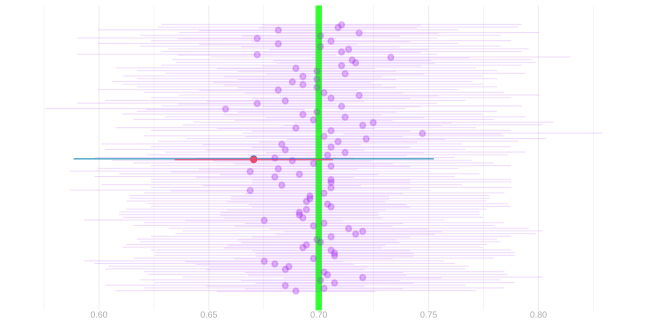
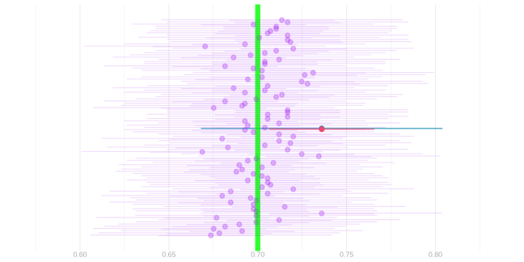
Chebyshev tells us a width that is sufficient. Can the moments also tell us how narrow a calibrated interval could be? Almost: we need two summaries of the absolute error, its mean and its mean square.
Return to the two distance pictures. They follow the same centered observations Z. The green lines mark two different averages: the average of |Z| and the average of Z^2.

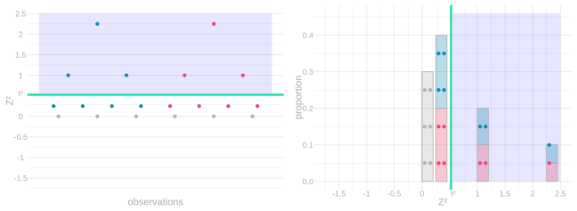
Average absolute distance.
Average squared distance.
For a nonnegative random variable A with finite, positive second moment, the Paley–Zygmund inequality implies, for 0\le t<\mathop{\mathrm{E}}[A], P(A\ge t)\ge\frac{(\mathop{\mathrm{E}}[A]-t)^2}{\mathop{\mathrm{E}}[A^2]}. Apply it to A=|\hat\mu-\mu|. For an unbiased estimator, \mathop{\mathrm{E}}[A^2] is its variance; \mathop{\mathrm{E}}[A] is its mean absolute error. This supplies lower control of the tail using those two moments. A derivation using the indicator split and Cauchy–Schwarz is in these probability-bound notes.
For 95\% coverage, any symmetric half-width smaller than \max\left\{0,\;\mathop{\mathrm{E}}[A]-\sqrt{0.05\mathop{\mathrm{E}}[A^2]}\right\} misses more than 5\% of the probability. The dashed yellow intervals below mark that lower control of width; they are not another proposed 95\% interval. The exact calibrated widths lie between it and the sufficient Chebyshev widths.
intcomp.mae.binom = sum(abs(intcomp.error)*intcomp.pmf.binom)
intcomp.mae.hyper = sum(abs(intcomp.error)*intcomp.pmf.hyper)
intcomp.hw.lower.binom = max(0, intcomp.mae.binom-sqrt(.05)*intcomp.sigma.binom)
intcomp.hw.lower.hyper = max(0, intcomp.mae.hyper-sqrt(.05)*intcomp.sigma.hyper)
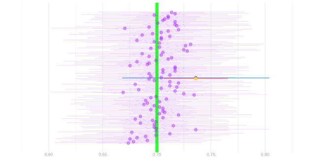
Why is variance alone insufficient? Consider an error that is zero with probability 95\% and is -L or L with probability 2.5\% each. Its mean is zero and its variance is 0.05L^2. Push the two tails farther out: the variance grows, but the interval containing just zero still contains 95\% of the probability. A large variance need not mean that most errors are large.


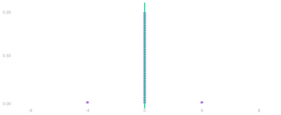
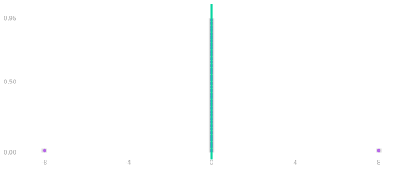
Tail distance 1.
Tail distance 2.
Tail distance 4.
Tail distance 8.
The lower-bound comparison therefore uses the mean absolute error as well as the variance. The binomial and hypergeometric examples let us calculate both, and place the exact calibrated width between the lower control and the sufficient Chebyshev width.